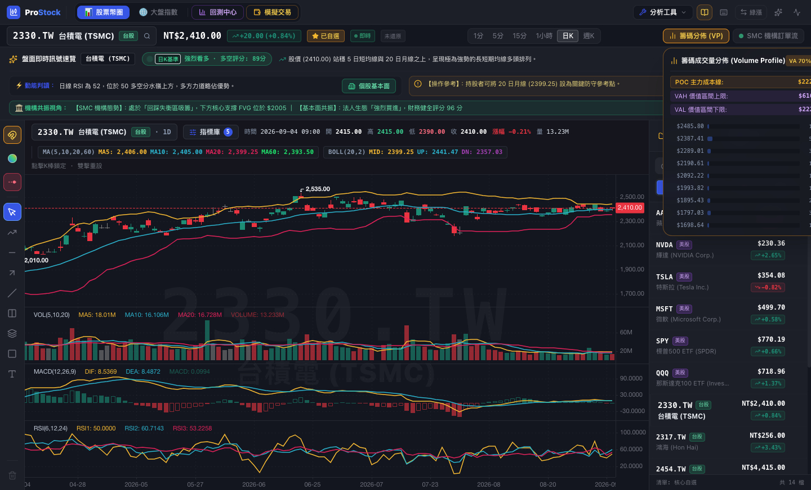
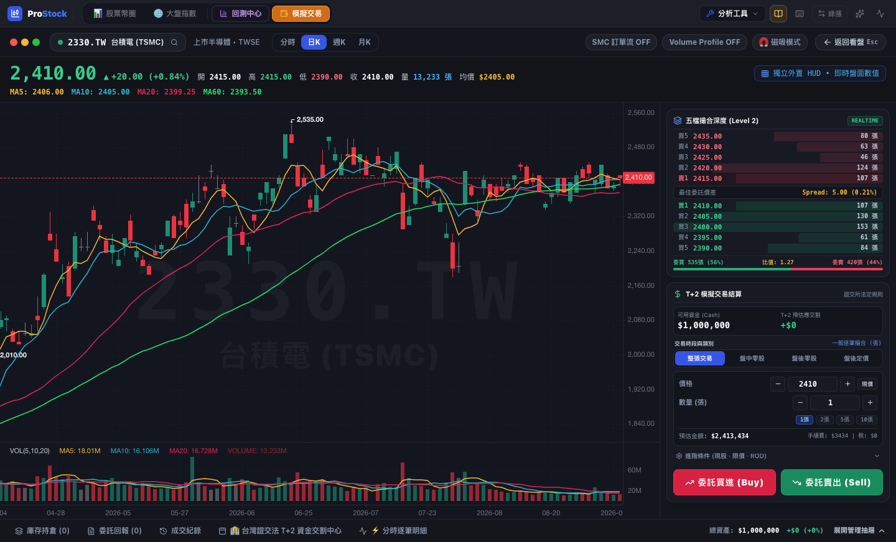

原生整合全市場 2,344 檔台股、美股與加密貨幣即時行情。搭載獨立外置 K 線 HUD 資訊列、台灣證券交易所 T+2 模擬撮合交割中心、五檔盤口深度與機構級籌碼分佈 (Volume Profile)。


摒棄一般消費級軟體的冗餘元素與灌水指標，只為實戰提供最純粹的高資訊密度與微秒級圖表回饋。
嚴格遵守台灣證券市場現行法定交割機制。委託撮合成功當下立即凍結保證金，並精確排定於 T+2 日上午 10:00 自動執行帳戶劃撥交割。
將即時現價、高低開收、即時漲跌幅與均線數據完全外置於圖表上方。徹底解決傳統看盤軟體數值標籤蓋住 K 線走勢圖的困擾，讓盤面視野更純淨、觀察價格形態更加清晰。
跳脫傳統時間軸成交量侷限，將各價位實際撮合成交量橫向繪製。精確標註 POC（Point of Control）主力最大成本線、70% 核心價值區間（VAH/VAL）與 SMC 失衡缺口（FVG）。
繪製趨勢線、水平支撐壓力、斐波那契黃金分割（Fibonacci）或箱體時，游標自動偵測並瞬時吸附至 K 棒最高點、最低點或收盤價，杜絕人為手抖誤差，多週期切換畫布永久記憶。
深度對接台灣證交所 (TWSE) 與櫃買中心 (TPEx) 官方 ISIN 清單，支援股票代號、中文簡稱與拼音秒級檢索。具備多自選庫分組、即時行情跳價閃爍 (Tick Flash) 與技術面客觀評分。
支援免安裝 Web 雲端即刻啟用，或下載原生 macOS 及 Windows 桌面客戶端獲取完整本機硬體加速。
即開即用 • 零系統警示 • 全平台通用
無需下載任何安裝檔，徹底規避作業系統權限警示。功能與桌面版完全一致，支援 PWA 漸進式技術，可一鍵將終端釘選為桌面獨立視窗應用。
Universal Binary • Apple Silicon & Intel
專為 macOS 深度適配，原生支援 Apple Silicon (M1~M4) 晶片與 Intel 處理器。具備 Metal / Canvas 硬體圖形渲染加速與本機離線快取。
Windows 10 / 11 (64-bit Architecture)
支援 Windows 10 及 Windows 11 64 位元環境。提供標準安裝導引程式（Setup）與隨身綠色免安裝執行檔（Portable），適應不同使用習慣。
為防範網路傳輸劫持與第三方二進位竄改，本專案提供官方建置產生之 SHA-512 雜湊碼。使用者可於本機終端機比對雜湊值，確認安裝包與官方發行版完全一致。
透過現代瀏覽器支援的 Progressive Web Apps (PWA) 規範，無須下載任何執行檔，即可將看盤終端直接安裝至系統桌面或 Dock，享受無網址列的純淨原生體驗。
本專案為非營利之獨立開源專案，發行版二進位未包含商業機構每年收費之數位簽章。初次執行時 macOS 或 Windows 系統可能會觸發安全性防護提示，此為標準防護機制。
若 macOS 提示「檔案已損毀，您應該將其丟到垃圾桶」，此為 Apple 對網路下載未簽章軟體預設套用之 com.apple.quarantine 隔離標籤。
微軟 Windows Defender 對所有發行時間較短或未購置 EV 企業簽名之新開源程式，預設將顯示藍色防護攔截畫面。
深入了解 ProStock Analyzer 的資料架構、授權協議與運行機制
ProStock Analyzer 為純粹之開源軟體專案，所有核心功能（包含即時行情檢索、多週期圖表、五檔撮合深度、Volume Profile 籌碼分佈及 T+2 模擬交易）全面免費開放，無任何付費會員門檻、廣告投放或隱藏資費。
系統對接主流公開金融行情 API（涵蓋台灣證券交易所 TWSE、櫃買中心 TPEx、Yahoo Finance 與美股即時數據），行情更新由客戶端直連請求，具備智慧容錯輪換機制，確保連線穩定與實時報價精確。
兩者功能核心 100% 相同。Web 版具備跨裝置隨開即用、零系統警示之優勢；桌面原生版則進一步整合本機 GPU 硬體管線加速與離線暫存能力，使用者可依自身工作流與硬體偏好自由選擇。
本專案嚴格貫徹「數據本地主權」原則。所有自選清單、指標參數調整與技術畫線資料，皆持久化存儲於使用者設備之本地資料庫中，即使版本升級或瀏覽器重啟亦不會遺失，完全免除個資外洩之疑慮。
客戶端於啟動時將自動與 GitHub Releases 官方伺服器進行版本輪詢比對。若偵測到新版本，右上方將顯示更新提示與直載按鈕，使用者點擊即可完成升級，原自選名單與技術畫線無縫繼承。